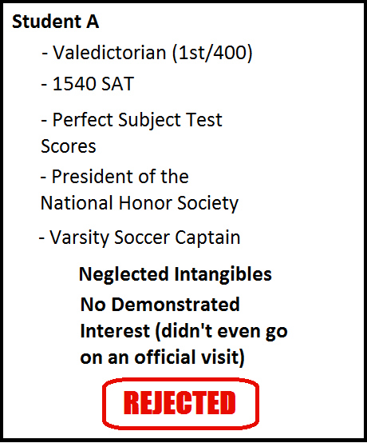
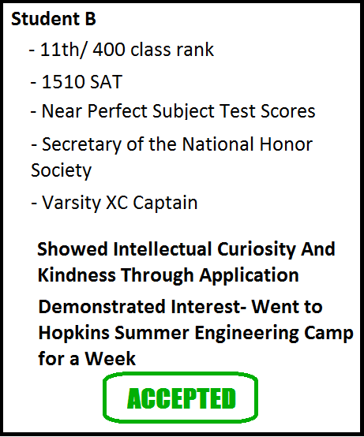
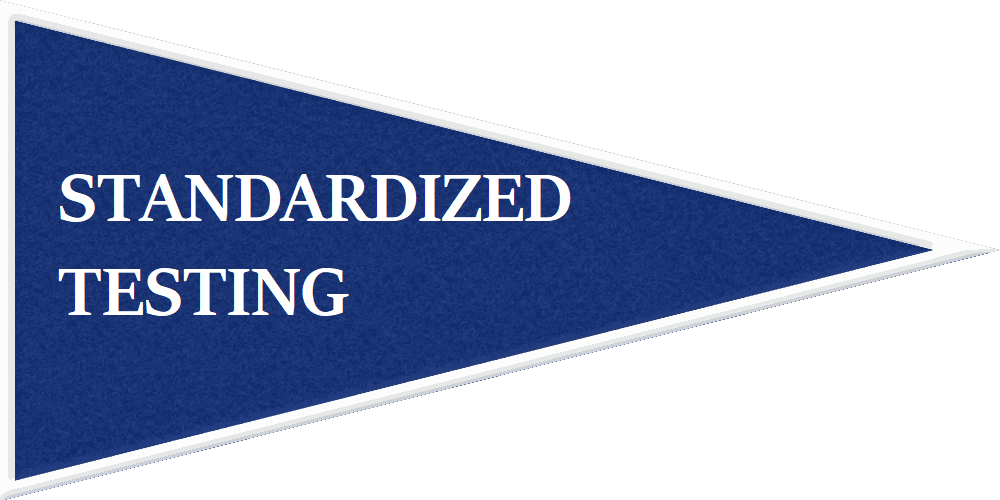
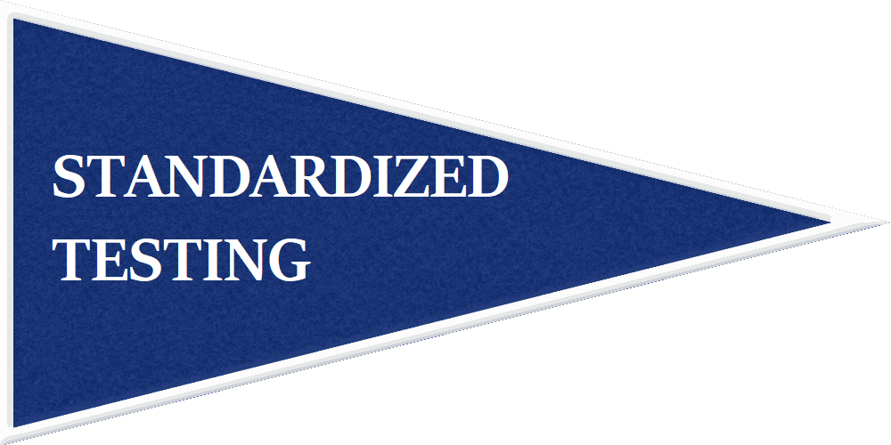

Demonstrated Interest
Demonstrated interest- how you as an applicant show your fondness and affinity towards the school you are applying to- is another one of those nuances that is often very influential.
Schools just below the ‘Ivy tier’ start to care significantly about an applicant's demonstrated interest in their school (and I am not entirely convinced that Ivies do not care at all). Generally you’ll see schools with acceptance rates between 20% to 60% be more honest about valuing demonstrated interest. An admissions counselor at Lehigh (24.7% acceptance rate this year) likened it to a ‘point system’ whereby visiting the school is a point, requesting information at college fairs is a point, etc. Thus demonstrating your interest in these types of schools is crucial as it really is the difference between them accepting you over another student with similar stats.
Demonstrated interest starts to become null as the acceptance rate climbs higher and higher. Most state schools, for example, receive too many applicants to care whether someone is actually going to their school or not but it sometimes can play in more than you think.
Why Do Colleges Care About Demonstrated Interest?
Obviously a college wants to be ‘liked’ by a student, but the real reason colleges care about interest is because it is a good indicator of whether a student is going to attend their college or not. Schools with acceptance rates between 10% and 50% really care about keeping their acceptance rate low and matriculation rate high (the rate at which accepted students choose to enroll). Acceptance rate and matriculation rate play into US News and World Report rankings, prestige, etc.
So, understanding that Ivies and state schools are likely where interest matters the least (although it doesn’t hurt), it is actually underestimated how much interest matters for top schools right outside of the Ivy range.
Let me provide some anecdotal evidence I have observed. I watched two kids apply to Johns Hopkins from the same school.

It is cases like this that people point to and say “the college process is so random/ arbitrary/ unfair/ doesn’t make any sense! Student A is academically superior to Student B in every way! He took harder classes, had better grades, test scores, better class rank, and he even had leadership positions!” And, yes, there is an inherent subjectivity to the process because it is people evaluating these intangibles, but in reality it is not random at all.
Student A was a bit better statistically, but he neglected the intangibles- most notably in this case demonstrated interest.
And that often can be the difference between an acceptance and a rejection.
Schools like Hopkins or in that tier claim to not care about interest but I am clearly very skeptical of this claim. At the very least it's a subconscious boost when an admissions officer sees something related to the college that they so adore on your application. I’d make the case, though, that demonstrated interest can often be the single differentiating factor between getting in and not getting in.
You have worked too hard throughout your high school career getting the grades and scores to let something like not visiting a school or showing you care hold you back from getting in.
Early Decision/ Early Action
Most people are aware of the advantage of applying to a school early decision. It increases your chances at admission slightly. Although the early acceptance rates are often inflated because recruited athletes are admitted through early decision and are already assured acceptance; the real statistical advantage is only a couple percent when you take out recruited athletes.
Still, though, at these top schools nowadays early decision is a great way to strengthen your application. It requires commitment, though, and hasty preparation.
I won’t get into early applications too much as much of it is already known. Harvard, Princeton, Stanford and Yale have what is called 'restrictive early action' which basically means you don't have to attend if accepted, but you can't apply to any other schools early decision or restrictive early action. So, be careful with the early application policies of the schools you are applying to as it can get a little bit tricky.
Know that early decision is a much stronger advantage than early action. Early decision is binding and thus you have to attend if accepted. The only way to get out of attending is if your financial situation changes and you can't afford to attend. Each college has an EFC (Expected Family Contribution) calculator on their website; the college assumes that you're okay with that EFC calculation. So, if your family's finances don't change, then you are still binded by early decision.
Early decision allows the college to be secure in knowing that if they accept you, you will attend.
Early decision provides a sizeable advantage and is the best way to fully leverage the power of demonstrated interest.
The advantage of early decision is often only a couple percent increase in acceptance rate (when you take out recruited athletes), but the early applicant pool can be slightly less competitive than the regular decision pool. With the less selective schools it can be even more of an advantage as students are often less inclined to commit to those schools.
Take advantage of early decision or early action if you can. You need every advantage you can get in today’s application process.
 
